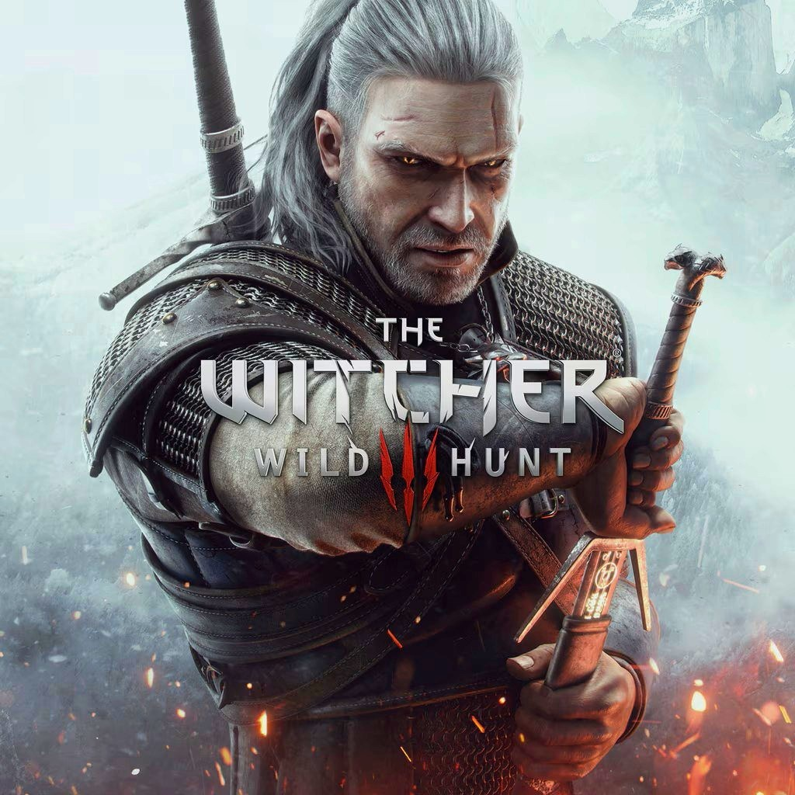

- Year: 2015
- Genre: Action RPG, Open World, Fantasy
- Developer: CD Projekt Red
- Platforms: PC, PlayStation 4, Xbox One, Nintendo Switch
- Awards: Game of the Year (GOTY) 2015
About the Game
The Witcher 3: Wild Hunt is an action role-playing game set in a vast open world, developed by CD Projekt Red. Players take on the role of Geralt of Rivia, a monster hunter known as a Witcher, who is on a quest to find his adopted daughter, Ciri, while navigating a war-torn world filled with political intrigue, mythical creatures, and moral dilemmas.
Key Features
- Open World: Explore a massive, beautifully crafted world with diverse landscapes, from bustling cities to eerie swamps.
- Rich Storytelling: Experience a deep, branching narrative with meaningful choices that impact the game's world and characters.
- Dynamic Combat: Engage in fast-paced, tactical combat using swords, magic, and alchemy.
- Monster Hunting: Track and battle a variety of mythical creatures, each requiring unique strategies to defeat.
- Expansions: Includes two critically acclaimed expansions, *Hearts of Stone* and *Blood and Wine*, adding hours of additional content.
Why It Won GOTY 2015
- Revolutionary Open World: Set a new standard for open-world RPGs with its seamless exploration and immersive environments.
- Character Development: Geralt's journey and relationships with characters like Yennefer, Triss, and Ciri resonated deeply with players.
- Player Choice: The game's emphasis on moral ambiguity and player-driven outcomes was praised for its depth and realism.
- Technical Achievement: Stunning visuals, a dynamic day-night cycle, and a richly detailed world showcased the capabilities of next-gen consoles and PCs.
- Cultural Impact: The game's success helped elevate CD Projekt Red to one of the most respected developers in the industry.